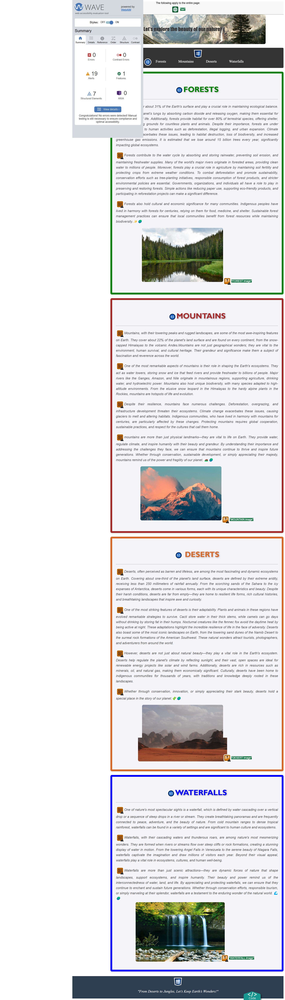

Feedback
Technical Description
The form features validated inputs, interactive elements, and real-time error handling via HTML and JavaScript. It’s well-structured with CSS for clarity and linked to the student’s three-page editor for consistency.
Accessibility
Designed for inclusivity, the form supports screen readers, keyboard navigation, and high-contrast visuals. ARIA attributes enhance assistive technology support, while responsive design and touch-friendly elements ensure mobile usability.

Link to the validation page
Include a link to the validation page, use the marker to jump to the corresponding section of the validation page.
Link to the page
About us
Technical Description
Built with HTML & CSS, the page features a fixed navigation bar, a team introduction section, and a background image with a brightness filter. A responsive design with Poppins font and hover effects enhances user engagement.
Accessibility
The page uses semantic HTML, high-contrast fonts, alt attributes for images, and a responsive layout. Well-spaced navigation and links enhance usability for all users, including those with mobility challenges.

Link to the validation page
Include a link to the validation page, use the marker to jump to the corresponding section of the validation page.
Link to the page
Content Page
Technical Description
The design prioritizes functionality and aesthetics using semantic HTML (nav, main, section) for structure and accessibility. CSS properties like flexbox and grid ensure responsiveness, while background-image and hover effects enhance visual appeal. ARIA attributes improve assistive technology support, and alt text ensures image accessibility. Proper spacing and contrast improve readability and user interaction.
Accessibility
The page uses semantic HTML, high-contrast colors, alt attributes, and a responsive layout for accessibility. Hover effects on interactive elements improve navigation, ensuring an inclusive user experience.
Link to the validation page
Include a link to the validation page, use the marker to jump to the corresponding section of the validation page.
Link to the page
Challenges and Lessons Learned
- Form Validation & Error Handling – Ensured correct input validation (email, phone, required fields) using HTML5 and JavaScript for real-time feedback, preventing incorrect submissions.
- Character Counter for Comments – Implemented a live character counter using JavaScript to help users manage input efficiently.
- Responsive Design Issues – Used CSS media queries and Flexbox to fix layout scaling problems on smaller screens, ensuring a mobile-friendly design,
- User Experience with CSS Styling – Styled error messages and input fields properly to maintain readability and a visually appealing design.
Compliance
Accessibility Compliance: The website follows accessibility standards by incorporating proper HTML semantic elements such as header, nav, main, and section, ensuring that the content is accessible to screen readers.
References
- United Nations (2025) Life on Land – Sustainable Development Goals. Available at: https://www.un.org/sustainabledevelopment/biodiversity/ (Last accessed: 9 Mar 2025).
- Smith, S., 2019. Conservation of Biodiversity and the Role of Forests. Environmental Science Journal, 12(3), pp. 45-60.https://www.closethegapfoundation.org/glossary/life-on-land
- World Wildlife Fund (2024) Life on Land – WWF Global. Available at: https://srilanka.un.org/en/sdgs/15/key-activities